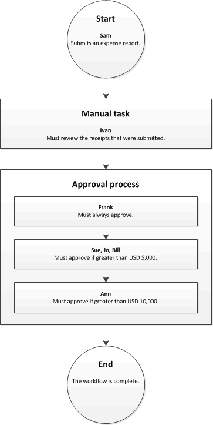

Configure approval steps in a workflow
Important
Diese Dokumentation ist teilweise von Microsoft verfasst und wurde nicht auf Vollständigkeit geprüft. Wenn informationen fehlen oder ein weiteres Kapitel hinzugefügt werden soll bitte eine Mail an das Dokumentations Team schreiben.
This topic explains how to configure the properties of an approval step.
To configure an approval step in the workflow editor, right-click the approval step, and then click Properties to open the Properties page. Then use the following procedures to configure the properties of the approval step.
Name the step
Follow these steps to enter a name for the approval step.
- In the left pane, click Basic Settings.
- In the Name field, enter a unique name for the approval step.
Enter a subject line and instructions
You must provide a subject line and instructions to users who are assigned to the approval step. For example, if you're configuring an approval step for purchase requisitions, the user who is assigned to the step sees the subject line and instructions on the Purchase requisitions page. The subject line appears in a message bar on the page. The user can then click the icon in the message bar to see the instructions. Follow these steps to enter a subject line and instructions.
In the left pane, click Basic Settings.
In the Work item subject field, enter the subject line.
To personalize the subject line, you can insert placeholders. Placeholders are replaced with appropriate data when the subject line is shown to users. Follow these steps to insert a placeholder:
- In the text box, click where the placeholder should appear.
- Click Insert placeholder.
- In the list that appears, select the placeholder to insert.
- Click Insert.
To add translations of the subject line, follow these steps:
- Click Translations.
- On the page that appears, click Add.
- In the list that appears, select the language that you're entering the text in.
- In the Translated text field, enter the text.
- To personalize the text, you can insert placeholders as described in step 3.
- Click Close.
In the Work item instructions field, enter the instructions.
To personalize the instructions, you can insert placeholders. Placeholders are replaced with appropriate data when the instructions are shown to users. Follow these steps to insert a placeholder:
- In the text box, click where the placeholder should appear.
- Click Insert placeholder.
- In the list that appears, select the placeholder to insert.
- Click Insert.
To add translations of the instructions, follow these steps:
- Click Translations.
- On the page that appears, click Add.
- In the list that appears, select the language that you're entering the text in.
- In the Translated text field, enter the text.
- To personalize the text, you can insert placeholders as described in step 6.
- Click Close.
Assign the approval step
Follow these steps to specify who the approval step should be assigned to.
In the left pane, click Assignment.
On the Assignment type tab, select one of the options in the following table, and then follow the additional steps for that option before you go to step 3.
Option Users that the approval step is assigned to Additional steps Participant Users who are assigned to a specific group or role - After you select Participant, on the Role based tab, in the Type of participant list, select the type of group or role to assign the step to.
- In the Participant list, select the group or role to assign the step to.
Hierarchy Users in a specific organizational hierarchy - After you select Hierarchy, on the Hierarchy selection tab, in the Hierarchy type list, select the type of hierarchy to assign the step to.
- The system must retrieve a range of user names from the hierarchy. These names represent users that the step can be assigned to. Follow these steps to specify the starting point and ending point of the range of user names that the system retrieves:
- To specify the starting point, select a person in the Start from list.
- To specify the ending point, click Add condition. Then enter a condition that determines where in the hierarchy the system stops retrieving names.
- On the Hierarchy options tab, specify which users in the range the step should be assigned to:
- Assign to all users retrieved – The step is assigned to all users in the range.
- Assign only to last user retrieved – The step is assigned to only the last user in the range.
- Exclude users with the following condition – The step isn't assigned to any users in the range who meet a specific condition. Click Add condition to specify the condition.
Workflow user Users in the current workflow - After you select Workflow user, on the Workflow user tab, in the Workflow user list, select a user who participates in the workflow.
User Specific users - After you select User, click the User tab.
- The Available users list includes all system users. Select the users to assign the step to, and then move those users to the Selected users list.
On the Time limit tab, in the Duration field, specify how much time the user has to take action on, or respond to, documents that reach the approval step. Select one of the following options:
- Hours – Enter the number of hours that the user has to respond. Then select the calendar that your organization uses, and enter information about your organization's work week.
- Days – Enter the number of days that the user has to respond. Then select the calendar that your organization uses, and enter information about your organization's work week.
- Weeks – Enter the number of weeks that the user has to respond.
- Months – Select the day and week that the user must respond by. For example, you might want the user to respond by Friday of the third week of the month.
- Years – Select the day, week, and month that the user must respond by. For example, you might want the user to respond by Friday of the third week of December.
If the user doesn't take action on the document in the allotted time, the document is overdue. A document that is overdue is escalated, based on the options that you select in the Escalation area of the page.
If you assigned the approval step to multiple users or a group of users, on the Completion policy tab, select one of the following options:
Single approver – The action that is applied to the document is determined by the first person who responds. For example, Sam has submitted an expense report for USD 15,000. The expense report is currently assigned to Sue, Jo, and Bill. If Sue is the first person who responds to the document, the action that she takes is applied to the document. If Sue rejects the document, it's rejected and sent back to Sam. If Sue approves the document, it's sent to Ann for approval.

Majority of approvers – The action that is applied to the document is determined when most of the approvers respond. For example, Sam has submitted an expense report for USD 15,000. The expense report is currently assigned to Sue, Jo, and Bill. If Sue and Jo are the first two approvers who respond, the action that they take is applied to the document.
- If Sue approves the document, but Jo rejects it, the document is rejected and sent back to Sam.
- If both Sue and Jo approve the document, it's sent to Ann for approval.
Percentage of approvers – The action that is applied to the document is determined when a specific percentage of the approvers respond. For example, Sam has submitted an expense report for USD 15,000. The expense report is currently assigned to Sue, Jo, and Bill, and you entered 50 as the percentage. If Sue and Jo are the first two approvers who respond, the action that they take is applied to the document, because they meet the requirement for 50 percent of approvers.
- If Sue approves the document, but Jo rejects it, the document is rejected and sent back to Sam.
- If both Sue and Jo approve the document, it's sent to Ann for approval.
All approvers – All the approvers must approve the document. Otherwise, the workflow can't continue. For example, Sam has submitted an expense report for USD 15,000. The expense report is currently assigned to Sue, Jo, and Bill. If Sue and Joe approve the document, but Bill rejects it, the document is rejected and sent back to Sam. If Sue, Jo, and Bill all approve the document, it's sent to Ann for approval.
Specify when the approval step is required
You can specify when the approval step is required. The approval step can always be required, or it can be required only if specific conditions are met.
The approval step is always required
Follow these steps if the approval step is always required.
- In the left pane, click Condition.
- Select the Always run this step option.
The approval step is required in specific conditions
The approval step that you're configuring might be required only if specific conditions are met. For example, if you're configuring an approval step for a purchase requisition workflow, you might want the approval step to occur only if the amount of the purchase requisition is more than USD 10,000. Follow these steps to specify when the approval step is required.
In the left pane, click Condition.
Select the Run this step only when the following condition is met option.
Enter a condition.
Enter any additional conditions that are required.
To verify that the conditions that you entered are configured correctly, follow these steps:
- Click Test.
- On the Test workflow condition page, in the Validate condition area, select a record.
- Click Test. The system evaluates the record to determine whether it meets the conditions that you defined.
- Click OK or Cancel to return to the Properties page.
Specify what happens when the document is overdue
If a user doesn't take action on a document in the allotted time, the document is overdue. A document that is overdue can be escalated, or automatically assigned to another user for approval. Follow these steps to escalate the document if it's overdue.
In the left pane, click Escalation.
Select the Use escalation path check box to create an escalation path. The system automatically assigns the document to the users who are listed in the escalation path. For example, the following table represents an escalation path.
Sequence Escalation path 1 Assign to: Donna 2 Assign to: Erin 3 Final action: Reject In this example, the system assigns the overdue document to Donna. If Donna doesn't respond in the allotted time, the system assigns the document to Erin. If Erin doesn't respond in the allotted time, the system rejects the document.
To add a user to the escalation path, click Add escalation. On the Assignment type tab, select one of the options in the following table, and then follow the additional steps for that option before you go to step 4.
Option Users that the document is escalated to Additional steps Hierarchy Users in a specific organizational hierarchy - After you select Hierarchy, on the Hierarchy selection tab, in the Hierarchy type list, select the type of hierarchy to escalate the document to.
- The system must retrieve a range of user names from the hierarchy. These names represent users that the document can be escalated to. Follow these steps to specify the starting point and ending point of the range of user names that the system retrieves:
- To specify the starting point, select a person in the Start from list.
- To specify the ending point, click Add condition. Then enter a condition that determines where in the hierarchy the system stops retrieving names.
- On the Hierarchy options tab, specify which users in the range the document should be escalated to:
- Assign to all users retrieved – The document is escalated to all users in the range.
- Assign only to last user retrieved – The document is escalated to only the last user in the range.
- Exclude users with the following condition – The document isn't escalated to any users in the range who meet a specific condition. Click Add condition to specify the condition.
Workflow user Users in the current workflow - After you select Workflow user, on the Workflow user tab, in the Workflow user list, select a user who participates in the workflow.
User Specific users - After you select User, click the User tab.
- The Available users list includes all users. Select the users to escalate the document to, and then move those users to the Selected users list.
On the Time limit tab, in the Duration field, specify how much time the user has to take action on, or respond to, documents. Select one of the following options:
- Hours – Enter the number of hours that the user has to respond. Then select the calendar that your organization uses, and enter information about your organization's work week.
- Days – Enter the number of days that the user has to respond. Then select the calendar that your organization uses, and enter information about your organization's work week.
- Weeks – Enter the number of weeks that the user has to respond.
- Months – Select the day and week that the user must respond by. For example, you might want the user to respond by Friday of the third week of the month.
- Years – Select the day, week, and month that the user must respond by. For example, you might want the user to respond by Friday of the third week of December.
Repeat steps 3 through 4 for each user that should be added to the escalation path. You can change the order of the users.
If the users in the escalation path don't respond in the allotted time, the system automatically take action on the document. To specify the action that the system takes, select the Action row, and then, on the End action tab, select an action.